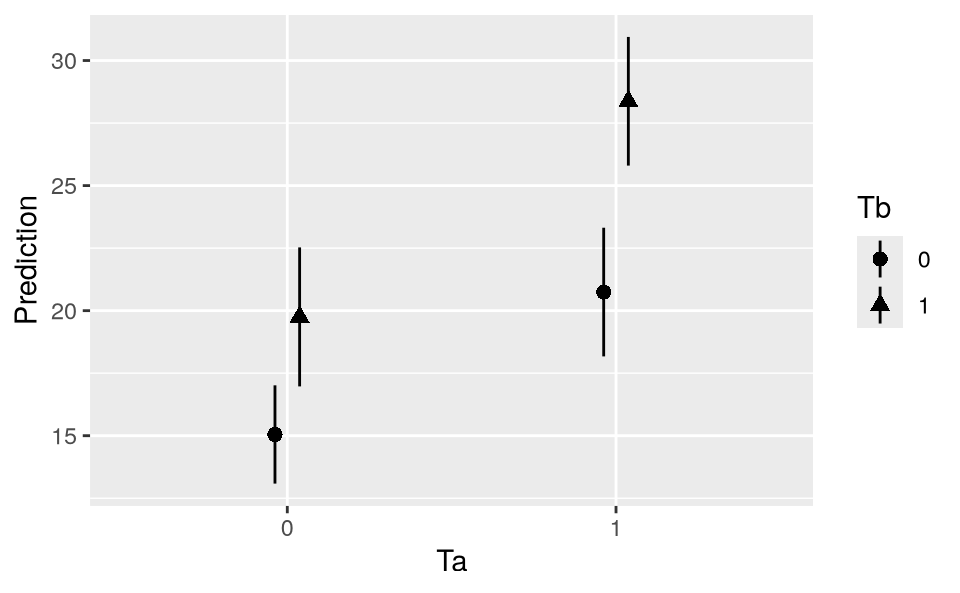
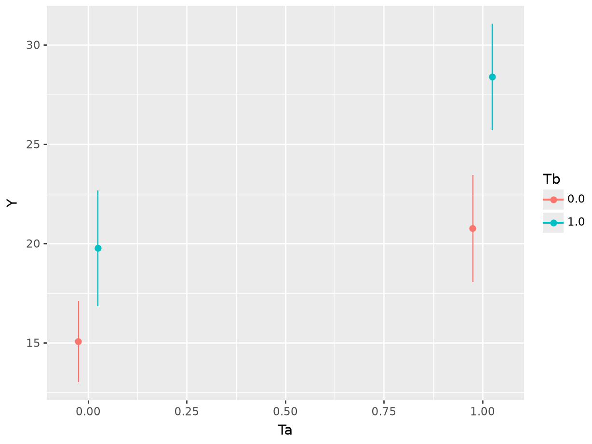
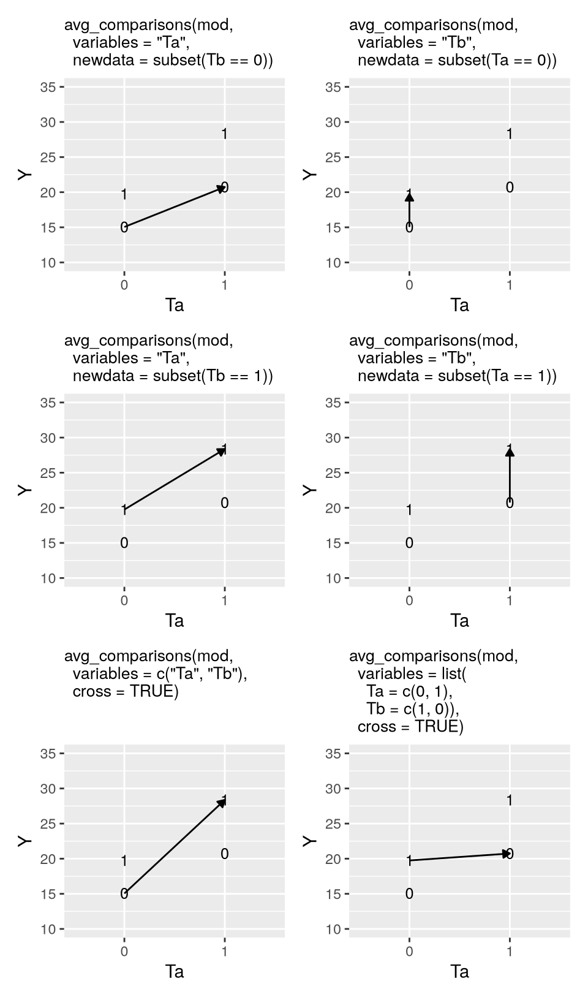

9 实验
从模型到意义 - 中文翻译
来源：Vincent Arel-Bundock，《从模型到意义：如何在 R 和 Python 中解释统计模型》 - 第 9 章 实验。 来源说明：截至 2026-09-19，revision 870f15a0 的公开代码仓库不包含本章完整的 .qmd 源文件。本页面翻译自同日下载的公开 HTML 快照。因此，R/Python 代码和图形均以静态形式展示；本网站未重新执行上游代码。 网站文本 (C) 2025 Vincent Arel-Bundock，保留所有权利；marginaleffects 软件代码基于 GPL-3 许可。 本页面为中文翻译，并非原文；其翻译与发布依据本 Notes 网站所使用的授权声明。
实验分析是 marginaleffects 软件包的常见使用场景。该软件包为研究者提供了一个强大的工具集，用于估计处理效应、解释交互作用，以及跨实验条件可视化结果。为说明这些优势，本章讨论两个常见应用：协变量调整，以及解释 2×2 析因实验的结果。marginaleffects.com 网站还提供了更多教程，用于指导其他各种实验设计的分析与解释。
9.1 回归调整
我们考虑的第一个应用是一个简单的双臂实验，其中参与者被随机分配到处理组或对照组。我们的目标是在调整协变量的同时，估计平均处理效应。与前几章一样，我们使用 Thornton 的数据（2008）。outcome 是一个二元变量，用于记录个体是否前往诊所了解自己的 HIV 状态。处理是随机提供给参与者的经济 incentive，目的是鼓励检测。
由于 incentive 处理是随机分配的，我们可以通过对二元结果变量进行线性回归，轻松估计平均处理效应（ATE）。这就是所谓的“线性概率模型”（LPM）。
library(marginaleffects)
dat = get_dataset("thornton")
mod = lm(outcome ~ incentive, data = dat)
coef(mod)
(Intercept) incentive
0.3397746 0.4510603
import polars as pl
from marginaleffects import *
from statsmodels.formula.api import logit, ols
dat = get_dataset("thornton")
mod = ols("outcome ~ incentive", data = dat.to_pandas()).fit()
mod.paramsIntercept 0.339775
incentive 0.451060
dtype: float64如前几章所示，marginaleffects 软件包实现了与模型选择基本无关的估计后转换。因此，如果分析者选择拟合 GLM（或其他）模型而不是这个 LPM，下面介绍的工作流程也无需改变。
incentive 变量对应的系数表示：在获得经济激励和未获得经济激励的人群之间，寻求检测结果的预测概率差异。这个结果与使用 avg_comparisons() 函数进行 G-计算所得的结果相同。1 与查看单个系数相比，使用该函数的一个优势是，vcov 参数可以让我们轻松报告异方差一致、稳健或聚类标准误。2
avg_comparisons(mod, variables = "incentive", vcov = "HC2")
|———-|————|——|————-|——-|——–|
avg_comparisons(mod, variables = "incentive", vcov = "HC2")shape: (1, 7)
┌──────────┬───────────┬──────┬─────────┬─────┬──────┬───────┐
│ Estimate ┆ Std.Error ┆ z ┆ P(>|z|) ┆ S ┆ 2.5% ┆ 97.5% │
│ --- ┆ --- ┆ --- ┆ --- ┆ --- ┆ --- ┆ --- │
│ str ┆ str ┆ str ┆ str ┆ str ┆ str ┆ str │
╞══════════╪═══════════╪══════╪═════════╪═════╪══════╪═══════╡
│ 0.451 ┆ 0.0209 ┆ 21.6 ┆ 0 ┆ inf ┆ 0.41 ┆ 0.492 │
└──────────┴───────────┴──────┴─────────┴─────┴──────┴───────┘
Term: incentive
Contrast: 1 - 0当处理是随机分配时，为了获得平均处理效应的无偏估计，并非一定要调整协变量。然而，在回归模型中纳入控制变量可以通过减少结果变量中未解释的方差来提高估计精度。这是一种有吸引力的策略，但必须谨慎应用。事实上，Freedman（2008）指出，以加性方式将控制变量直接纳入模型方程存在一个重要缺点：这可能引入小样本偏倚并降低渐近精度。为避免这一问题，Lin（2013）提出了一个简单的解决方案：将所有协变量与处理指标进行交互，并报告异方差稳健标准误。
mod = lm(outcome ~ incentive * (age + distance + hiv2004), data = dat)
mod = ols("outcome ~ incentive * (age + distance + hiv2004)",
data=dat.to_pandas()).fit()解释该模型的结果并不简单，因为模型包含多个系数以及若干乘性交互作用。3
coef(mod)
(Intercept) incentive age distance
0.309537645 0.496482649 0.003495124 -0.042323583
hiv2004 incentive:age incentive:distance incentive:hiv2004
0.013562711 -0.002177778 0.014571883 -0.070766068
mod.paramsIntercept 0.309538
incentive 0.496483
age 0.003495
distance -0.042324
hiv2004 0.013563
incentive:age -0.002178
incentive:distance 0.014572
incentive:hiv2004 -0.070766
dtype: float64所幸，我们可以再次调用 avg_comparisons()，以获得经过协变量调整的估计值及稳健标准误。
avg_comparisons(mod,
variables = "incentive",
vcov = "HC2")
|———-|————|——|————-|——-|——–|
avg_comparisons(mod, variables = "incentive", vcov = "HC2")shape: (1, 7)
┌──────────┬───────────┬──────┬─────────┬─────┬───────┬───────┐
│ Estimate ┆ Std.Error ┆ z ┆ P(>|z|) ┆ S ┆ 2.5% ┆ 97.5% │
│ --- ┆ --- ┆ --- ┆ --- ┆ --- ┆ --- ┆ --- │
│ str ┆ str ┆ str ┆ str ┆ str ┆ str ┆ str │
╞══════════╪═══════════╪══════╪═════════╪═════╪═══════╪═══════╡
│ 0.449 ┆ 0.0209 ┆ 21.5 ┆ 0 ┆ inf ┆ 0.408 ┆ 0.49 │
└──────────┴───────────┴──────┴─────────┴─────┴───────┴───────┘
Term: incentive
Contrast: 1 - 0这表明，平均而言，获得经济 incentive 会使寻求 HIV 检测结果的概率提高 44.9 个百分点。
9.2 析因实验
析因实验是一种研究设计，允许研究者同时评估两个或更多随机处理的效应，其中每个处理具有多个水平或条件。一个常见例子是 2×2 设计：两个具有两个水平的变量被同时且独立地随机分配。这种设置不仅能够让评估者量化每个处理的效应，还能检验处理之间是否存在交互作用。
在医学领域，析因实验被广泛用于探索药物相互作用等复杂现象，研究者通过测试不同的处理组合来观察其如何影响患者的结果。在植物生理学中，析因实验可用于观察温度和湿度的组合如何影响光合作用。在商业环境中，公司可以使用析因设计检验不同的广告策略和价格点是否会促进销售。
作为说明，我们考虑一个包含 32 个观测值的简单数据集，其中有一个数值型结果变量 \Y\，以及两个各有两个水平的处理：\T_a=\0,1\\ 和 \T_b=\0,1\\。我们拟合一个线性回归模型，将每个处理分别纳入模型，并加入二者的乘性交互作用。4
library(marginaleffects)
dat = get_dataset("factorial_01")
mod = lm(Y ~ Ta + Tb + Ta:Tb, data = dat)
coef(mod)
(Intercept) Ta Tb Ta:Tb
15.050000 5.692857 4.700000 2.928571
dat = get_dataset("factorial_01")
mod = ols("Y ~ Ta + Tb + Ta:Tb", data = dat.to_pandas()).fit()
mod.paramsIntercept 15.050000
Ta 5.692857
Tb 4.700000
Ta:Tb 2.928571
dtype: float64我们可以使用 plot_predictions 函数，绘制 \T_a\ 和 \T_b\ 每种组合下的模型预测值。
plot_predictions(mod, by = c("Ta", "Tb"))

plot_predictions(mod, by = ["Ta", "Tb"]).show()

现在，假设我们想估计在保持 \T_b=0\ 不变的情况下，将 \T_a\ 从 0 变为 1 对 \Y\ 的效应。我们定义 \Y\ 的两个反事实值，并计算二者之差。
\\
我们可以采用类似的方法估计交叉比较，即同时将 \T_a\ 和 \T_b\ 从 0 变为 1 的效应。
\\
在简单的 2×2 实验中，这种计算相当简单。然而，当引入更多处理条件，或回归模型包含非线性成分时，情况很快会变得复杂。此外，即使我们可以通过对系数求和得到所关心的估计值，计算标准误（经典标准误或稳健标准误）也并不简单。因此，使用 marginaleffects 这样的软件来替我们完成这些繁琐工作会很方便。
为了估计在保持 \T_b=0\ 不变时 \T_a\ 对 \Y\ 的效应，我们使用 avg_comparisons() 函数。variables 参数指定感兴趣的处理，newdata 参数指定我们希望评估比较时其他处理所处的水平。在本例中，我们使用 newdata=subset(Tb == 0)，仅在 \T_b=0\ 的观测子集中计算感兴趣的量。
avg_comparisons(mod,
variables = "Ta",
newdata = subset(Tb == 0))
|———-|————|——|————-|——-|——–|
avg_comparisons(mod, variables = "Ta",
newdata = dat.filter(pl.col("Tb") == 0))shape: (1, 7)
┌──────────┬───────────┬──────┬─────────┬──────┬──────┬───────┐
│ Estimate ┆ Std.Error ┆ z ┆ P(>|z|) ┆ S ┆ 2.5% ┆ 97.5% │
│ --- ┆ --- ┆ --- ┆ --- ┆ --- ┆ --- ┆ --- │
│ str ┆ str ┆ str ┆ str ┆ str ┆ str ┆ str │
╞══════════╪═══════════╪══════╪═════════╪══════╪══════╪═══════╡
│ 5.69 ┆ 1.65 ┆ 3.45 ┆ 0.0018 ┆ 9.11 ┆ 2.31 ┆ 9.08 │
└──────────┴───────────┴──────┴─────────┴──────┴──────┴───────┘
Term: Ta
Contrast: 1 - 0为了估计交叉比较，我们在 variables 参数中指定每个感兴趣的处理，并设置 cross=TRUE。这样可以得到同时将 \T_a\ 和 \T_b\ 从 0 变为 1 的估计效应。
avg_comparisons(mod,
variables = c("Ta", "Tb"),
cross = TRUE)
|——-|——-|———-|————|——|————-|——-|——–|
avg_comparisons(mod, variables=["Ta", "Tb"], cross=True)shape: (1, 9)
┌───────┬───────┬──────────┬───────────┬───┬──────────┬──────┬──────┬───────┐
│ C: Ta ┆ C: Tb ┆ Estimate ┆ Std.Error ┆ … ┆ P(>|z|) ┆ S ┆ 2.5% ┆ 97.5% │
│ --- ┆ --- ┆ --- ┆ --- ┆ ┆ --- ┆ --- ┆ --- ┆ --- │
│ str ┆ str ┆ str ┆ str ┆ ┆ str ┆ str ┆ str ┆ str │
╞═══════╪═══════╪══════════╪═══════════╪═══╪══════════╪══════╪══════╪═══════╡
│ 1 - 0 ┆ 1 - 0 ┆ 13.3 ┆ 1.65 ┆ … ┆ 8.74e-09 ┆ 26.8 ┆ 9.94 ┆ 16.7 │
└───────┴───────┴──────────┴───────────┴───┴──────────┴──────┴──────┴───────┘
Term: cross图 9.1 展示了 2×2 实验设计中值得关注的六种比较。纵轴表示每个处理组中结果变量的取值。横轴表示第一个处理 \T_a\ 的取值。点的形状——0 或 1——表示 \T_b\ 处理的取值。例如，左上方的“1”符号表示 \T_a=0,T_b=1\ 组中 \Y\ 的平均值。
在每个面板中，箭头连接我们想要比较的两个处理组。例如，在左上方面板中，我们比较 \_{T_a=0,T_b=0}\ 与 \_{T_a=1,T_b=0}\。在右下面板中，我们比较 \_{T_a=0,T_b=1}\ 与 \_{T_a=1,T_b=0}\。每个面板顶部的 avg_comparisons() 调用展示了如何使用 marginaleffects 计算处理条件发生图示变化时 \Y\ 产生的差异。

析因实验如此受欢迎的一个原因是，它们允许研究者评估处理之间相互作用的可能性。事实上，在某些情况下，处理 \T_a\ 的效应在处理 \T_b\ 的不同取值下会更强（或更弱）。
为检验这一点，我们估计在具有不同 \T_b\ 取值的观测子集中，\T_a\ 从 0 变为 1 的效应。
cmp <- avg_comparisons(mod, variables = "Ta", by = "Tb")
cmp
|—–|———-|————|——|————-|——-|——–|
avg_comparisons(mod, variables = "Ta", by = "Tb")shape: (2, 8)
┌─────┬──────────┬───────────┬──────┬─────────┬──────┬──────┬───────┐
│ Tb ┆ Estimate ┆ Std.Error ┆ z ┆ P(>|z|) ┆ S ┆ 2.5% ┆ 97.5% │
│ --- ┆ --- ┆ --- ┆ --- ┆ --- ┆ --- ┆ --- ┆ --- │
│ str ┆ str ┆ str ┆ str ┆ str ┆ str ┆ str ┆ str │
╞═════╪══════════╪═══════════╪══════╪═════════╪══════╪══════╪═══════╡
│ 0 ┆ 5.69 ┆ 1.65 ┆ 3.45 ┆ 0.0018 ┆ 9.11 ┆ 2.31 ┆ 9.08 │
│ 1 ┆ 8.62 ┆ 1.93 ┆ 4.46 ┆ 0.00012 ┆ 13 ┆ 4.66 ┆ 12.6 │
└─────┴──────────┴───────────┴──────┴─────────┴──────┴──────┴───────┘
Term: Ta
Contrast: 1 - 0当 \T_b=0\ 时，\T_a\ 对 \Y\ 的估计效应等于 5.69；而当 \T_b=1\ 时，该效应等于 8.62。乍看之下，\T_b=1\ 时 \T_a\ 的效应似乎更强。
两个估计的差异在统计学上显著吗？\T_b\ 是否调节 \T_a\ 的效应？这里是否存在处理异质性，或 \T_a\ 与 \T_b\ 之间的交互作用？为回答这些问题，我们使用 hypothesis 参数，检验子组估计值之间的差异是否显著。
avg_comparisons(mod,
variables = "Ta",
by = "Tb",
hypothesis = "b2 - b1 = 0")
|————|———-|————|——|————-|——-|——–|
avg_comparisons(mod, variables = "Ta", by = "Tb",
hypothesis = "b1 - b0 = 0")shape: (1, 7)
┌──────────┬───────────┬──────┬─────────┬──────┬───────┬───────┐
│ Estimate ┆ Std.Error ┆ z ┆ P(>|z|) ┆ S ┆ 2.5% ┆ 97.5% │
│ --- ┆ --- ┆ --- ┆ --- ┆ --- ┆ --- ┆ --- │
│ str ┆ str ┆ str ┆ str ┆ str ┆ str ┆ str │
╞══════════╪═══════════╪══════╪═════════╪══════╪═══════╪═══════╡
│ 2.93 ┆ 2.54 ┆ 1.15 ┆ 0.259 ┆ 1.95 ┆ -2.28 ┆ 8.13 │
└──────────┴───────────┴──────┴─────────┴──────┴───────┴───────┘
Term: b1-b0=0尽管两个估计值之间存在差异，但 \z\ 统计量和 \p\ 值表明，这一差异在统计学上并不显著。因此，无论 \T_b\ 取何值，我们都不能拒绝 \T_a\ 的效应相同这一原假设。
Freedman, David A. 2008. “On Regression Adjustments to Experimental Data.” Advances in Applied Mathematics 40 (2): 180–93. Lin, Winston. 2013. “Agnostic Notes on Regression Adjustments to Experimental Data: Reexamining Freedman’s Critique.” Annals of Applied Statistics 7 (1): 295–318. https://doi.org/10.1214/12-AOAS583. Thornton, Rebecca L. 2008. “The Demand for, and Impact of, Learning HIV Status.” American Economic Review 98 (5): 1829–63.
Lin（2013）建议将处理指标与去均值后的控制变量进行交互。这样做后，处理变量的线性回归系数便可以直接解释。使用
avg_comparisons()函数更加方便，因为它无需我们先对控制变量去均值，就能产生相同的结果。正如 Lin 所指出的，出于透明性考虑，报告未经调整的估计值可能仍然是一个好主意，也可以避免产生进行特定搜索的诱惑。↩︎